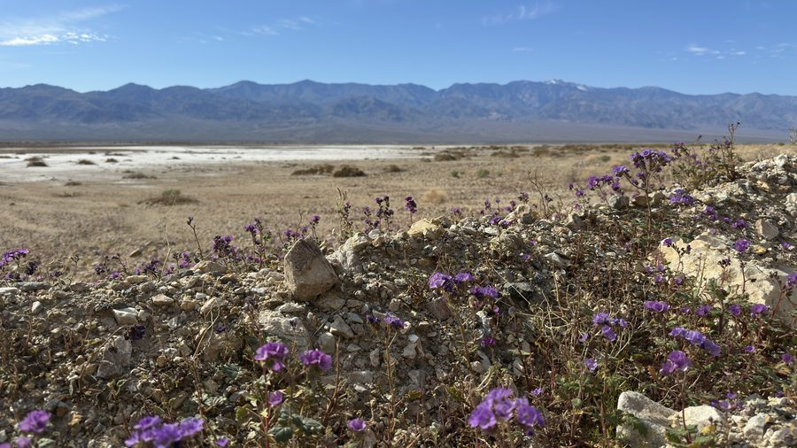
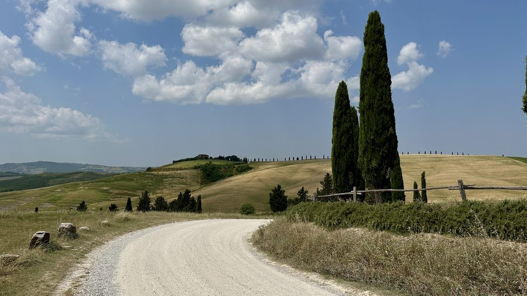

Security-sensitive QA
Hands-on testing in regulated government systems, lawful interception domains, and environments where privacy, data integrity, and controlled access matter.
QA for places where reliability is not optional
I am a Senior QA Engineer focused on regulated, defense, and security-sensitive environments, including air-gapped and classified-style delivery contexts. My work blends exploratory testing, Playwright automation, production support, and practical risk judgement.
30-second signal
Hands-on testing in regulated government systems, lawful interception domains, and environments where privacy, data integrity, and controlled access matter.
End-to-end quality responsibility across full delivery cycles, from release scope and certification to production readiness and stakeholder reporting.
Playwright automation for high-value regression paths, including a 10x reduction in regression execution time on critical checks.
Personal note
Travel keeps me observant: small details, changing conditions, unfamiliar systems. QA uses the same muscles, just with logs, requirements, test data, and release risk.

